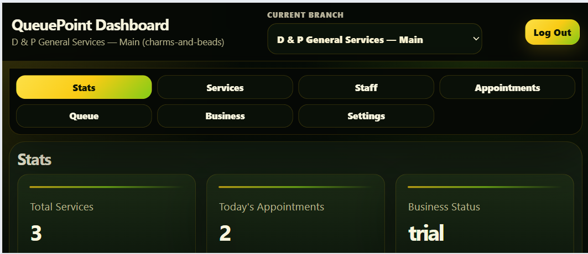

Business workflow first
I start by understanding how the business actually operates: who enters data, who owns records, what changes status, and where mistakes can cost time or money.
Lucena City, Quezon · Business Systems Developer
I help small businesses replace manual processes with working web applications: marketplaces, booking systems, queue dashboards, internal tools, and multi-tenant Supabase apps with authentication, PostgreSQL, RLS, RPC workflows, Vercel deployment, and mobile-tested user flows.
Systems experience + modern implementation
Before returning to modern web development, I worked in systems analysis, programming, application support, and business software workflows. That background shapes how I build today: I think in terms of users, records, permissions, status changes, edge cases, reports, and operational flow — then implement those workflows with Supabase, PostgreSQL, RLS, JavaScript, GitHub, Vercel, and real-device testing.
I start by understanding how the business actually operates: who enters data, who owns records, what changes status, and where mistakes can cost time or money.
My Supabase builds focus on record ownership, RLS policies, authenticated users, tenant boundaries, and safer backend workflows.
I test real mobile behavior: sticky navigation, Android Back, keyboard layouts, landscape screens, form safety, and user-error recovery.
Services Offered
Best fit for local entrepreneurs, small shops, portfolio builders, and lightweight business systems that need a reliable backend without the overhead of heavy frontend frameworks.
Project setup, table design, relationships, storage buckets, auth flows, and clean client-side integration.
Row-level security planning for buyers, sellers, admins, private records, and role-based workflows.
Local/cloud workflow checks, migration readiness, environment variables, deployment notes, and troubleshooting.
API calls, auth state, cart logic, dashboards, form validation, and DOM-based UI updates without packaged frameworks.
Seller onboarding, product CRUD, order tracking, stock checks, and buyer-side checkout logic.
Console-based debugging, stable error handling, rollback planning, and production-readiness cleanup.
Additional Capabilities
In addition to Supabase backend and dashboard work, D & P Systems can help early-stage clients test ideas faster through quick app prototypes and coordinated creative production support.
Cross-platform mobile/desktop app prototypes connected to a real Supabase backend for testing app ideas, workflows, dashboards, and proof-of-concept business tools.
Creative services are coordinated through trusted strategic collaborators, allowing D & P Systems to support early-stage projects that need both working systems and presentation-ready visual assets.
Logo concepts, basic brand visuals, social media graphics, and presentation-ready design assets are supported through trusted strategic collaborators when a project needs both technical implementation and visual polish.
Flagship Proof
Marketplace demonstrates e-commerce workflow depth: seller identity, product CRUD, stock validation, multi-seller checkout, order tracking, and review moderation. QueuePoint demonstrates SaaS workflow depth: branch isolation, public booking, appointment tracking, queue operations, staff/services/settings, edit-lock safety, mobile navigation, and pilot-ready business workflows.

Project 1 · Marketplace
A Supabase-backed marketplace prototype with guest checkout, seller onboarding, product CRUD, multi-seller order splitting, stock validation, order tracking, review moderation, and real Android mobile QA.

Project 2 · QueuePoint
A multi-branch appointment and queue management MVP for small service businesses. Built with Supabase Auth, PostgreSQL, RLS, branch-specific data, public booking, appointment tracking, dashboard status updates, service/staff management, settings, mobile navigation safety, and edit-lock protection.
What I build best
My strongest fit is not decorative websites. It is workflow software: booking tools, seller dashboards, internal admin panels, lightweight SaaS prototypes, marketplace systems, and custom business tools where data ownership, permissions, status changes, and mobile usability matter.
Appointment flows, queue status, branch-specific services, public tracking, and front-desk-friendly dashboards.
Seller onboarding, product CRUD, stock checks, order tracking, checkout logic, and review moderation.
PostgreSQL tables, RLS, Auth, RPCs, dashboard queries, deployment, and practical data workflows for small business operations.
Real-Device QA & DevTools
Both flagship projects were tested beyond desktop resizing. The mobile QA path included real Android checks, portrait and landscape screens, keyboard behavior, dashboard section history, Android Back trapping, sticky mobile navigation, and form-safety regression tests.

chrome://inspect with USB debugging to
inspect live Android Chrome tabs, focus mobile pages, monitor
console behavior, and validate marketplace flows on a real phone.


Checkout success, track page Back to Shop, empty-cart return, and Seller Hub internal views were cleaned up with replace(), pushState(), and popstate handling to avoid Android Back loops.
Buyer cart, tracking, and review screens were tested in landscape with the mobile keyboard open, then adjusted for natural scrolling instead of fragile height locks.
Call/Text, Messenger, and TikTok links were confirmed on device. Viber direct chat was captured during onboarding but hidden from the buyer UI after real-device and desktop tests proved unreliable.
Database Proof
The marketplace project moved beyond static landing pages into actual schema design: sellers, buyers, products, orders, status fields, inventory values, and contact/social data for customer workflows.

Products belong to sellers, orders connect buyers and sellers, and seller profile fields support buyer contact workflows.
Stock quantity, active status, order amount, and checkout validation are treated as backend workflow concerns, not just UI labels.
The schema creates a base for RLS rules, seller ownership checks, and safer role-based data access.
Real Workspace
The original desk photo is kept as an authentic supporting image, but improved with a tighter crop, darker grade, and cleaner portfolio treatment. Will be replaced by a more meaningful picture.

What I Can Fix For Clients
This section is aimed at small businesses, local sellers, and project owners who already have a website or prototype but need the system behavior to actually work reliably.
Fix auth state problems, missing profile records, seller onboarding issues, and pages that fail after login.
Review table structure, relationships, foreign keys, naming, and whether the database matches the actual business workflow.
Plan Supabase RLS rules so buyers, sellers, and admins only see or modify the records they should control.
Improve stock checks, cart validation, order creation, seller-based order grouping, and checkout failure handling.
Debug Supabase insert/update errors, validation gaps, wrong input selectors, missing required fields, and silent JavaScript failures.
Check environment variables, Supabase project links, local/cloud differences, CLI workflow issues, and production cleanup tasks.
Workflow Review
Send me your current process, screenshots, database tables, or error logs. I can help turn manual workflows into cleaner Supabase-backed dashboards, booking tools, marketplace flows, and internal systems with real data rules.
Contact
Describe the business process, dashboard, booking flow, marketplace, or internal tool you need. Screenshots, table notes, and console errors are welcome.